Na parte I, foi estudada a teoria associada com este método. Resumindo:
Astrom e Hagglund (1984) propuseram um poderoso método de variação de auto-sintonia (ATV = Auto-Tune Variation) para obter o ganho final,
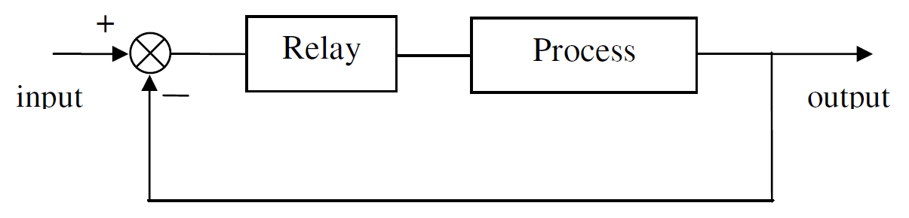
A ação do relé fará a entrada do processo alternar ao redor do estado estável
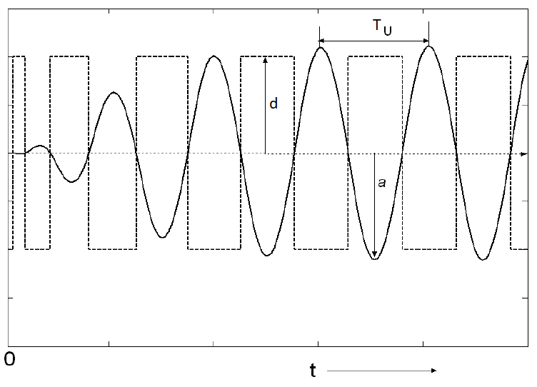
O período de oscilações corresponde ao período final,
Vantagens:
O método ATV tem vantagens sobre os outros métodos. Este método encontra automaticamente a frequência crítica (ou período) de oscilação do processo. Além disso, grandes desvios longe do estado estável são evitados, pois este é um teste de loop fechado. Eventualmente os valores do ciclo limite do relé podem ser definidos pelo usuário, alimentando a planta com os valores máximos
A ideia agora é Implementar o método do relé no Matlab/Simulink…
Seja a planta:
Implementando o metódo do relé para este planta no Matlab/Simulink, podemos chegar à:
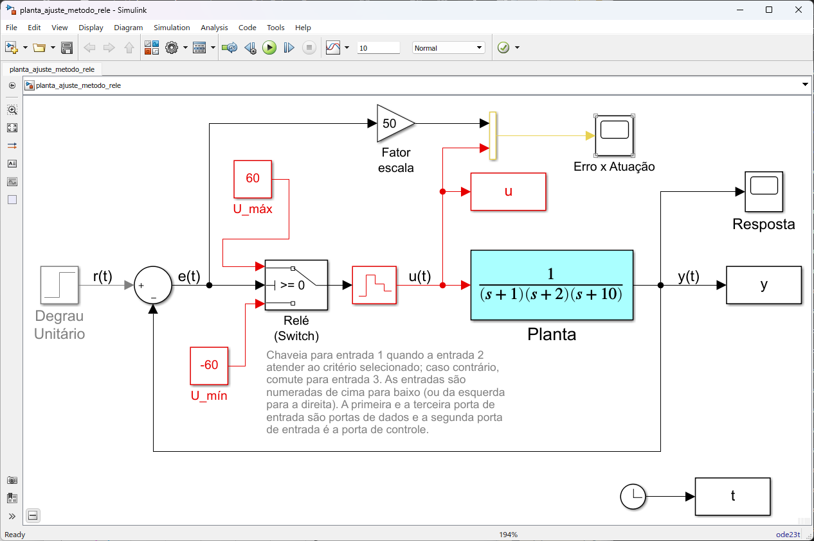
Note alguns detalhes:
A referência estabelecida foi um sinal degrau (constante de amplitude
O ganho DC (
>> G=tf(1,poly([-1 -2 -10]));
>> zpk(G)
1
------------------
(s+10) (s+2) (s+1)
>> dcgain(G)
0.05
ou:
Motivo pelo qual, para as amplitudes dos sinais de atuação/controle, à serem gerados pelo relé, foi optado pelo valor 60:
>> dcgain(G)*60
ans =
3
Gráfico do sinal de erro
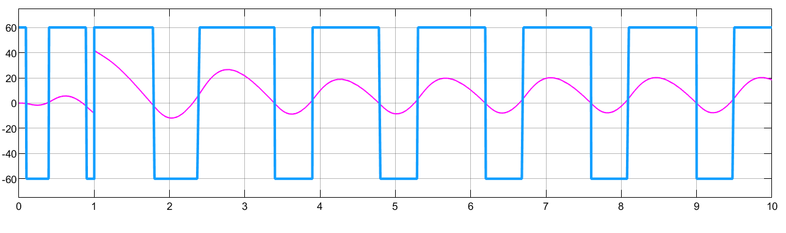
Gráfico da resposta (saída) do sistema:
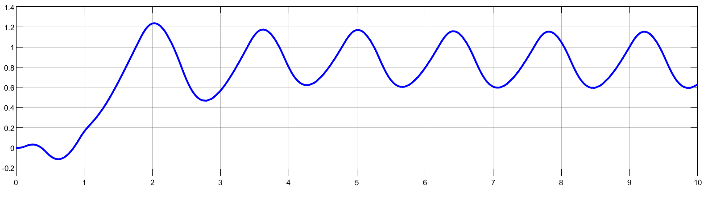
Necessitamos agora caputar as informações que nos interessam:
Extraíndo a informação do período de oscilação,
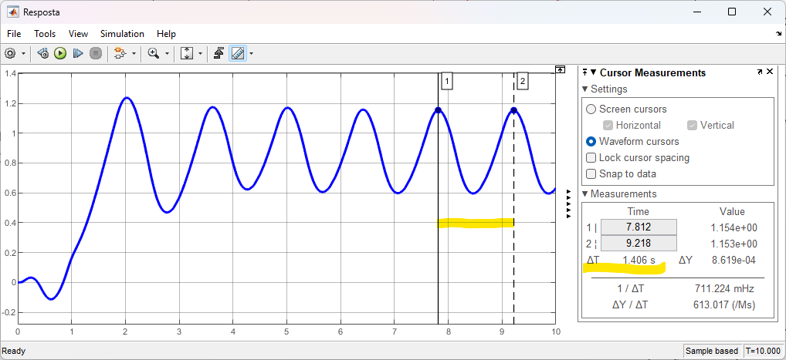
Da figura percebemos que
Extraíndo a informação referente à amplitudade da oscilação,
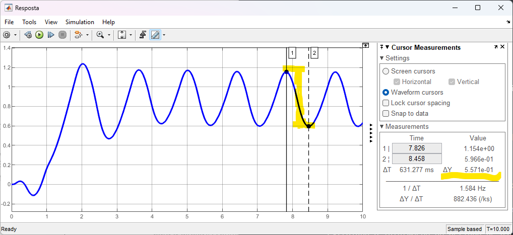
Da figura, temos que
>> a=0.5571/2
a =
0.27855
Extraíndo informação referente ao sinal gerado pelo relé:
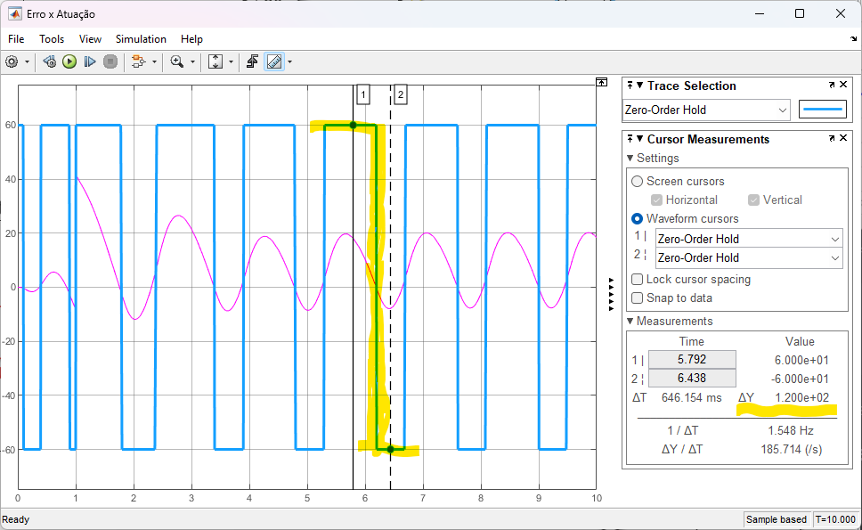
Da figura, temos que
Completando os cálculos de estimativa do
>> d=60;
>> Ku=(4*d)/(pi*a)
Ku =
274.26
Calculando os parâmetros para o PID usando a tradicional tabela de Zigler-Nichols:
>> Tu=1.406;
>> Kp=.6*Ku
Kp =
164.55
>> Ki=1.2*(Ku/Tu)
Ki =
234.07
>> Kd=0.074*Ku*Tu
Kd =
28.535
Aplicando no PID do Matlab/Simulink:
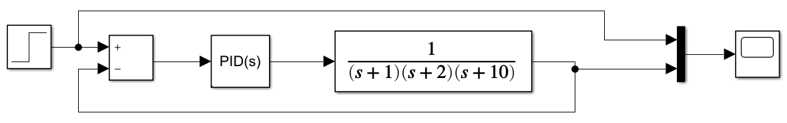
Os parâmetros usados foram:
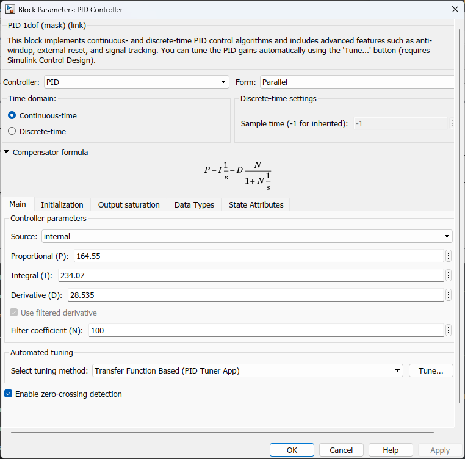
Obs.: deixado parâmento
Obtemos as seguintes respostas:
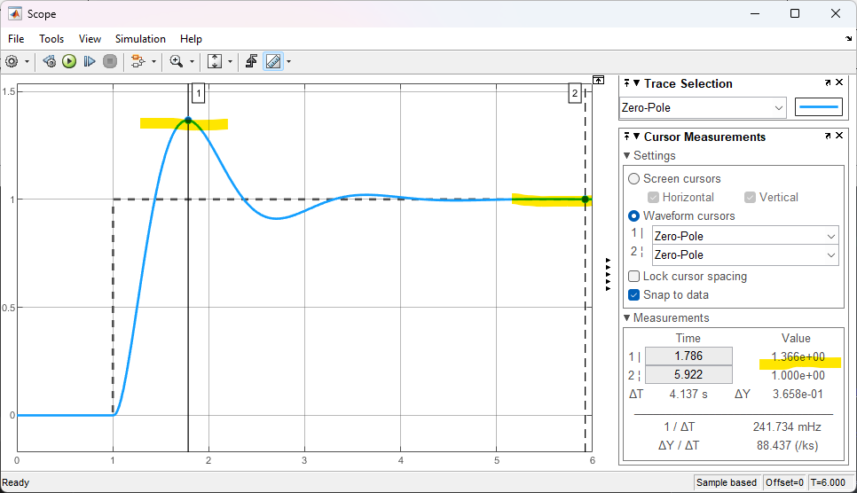
ou seja um overshhot de
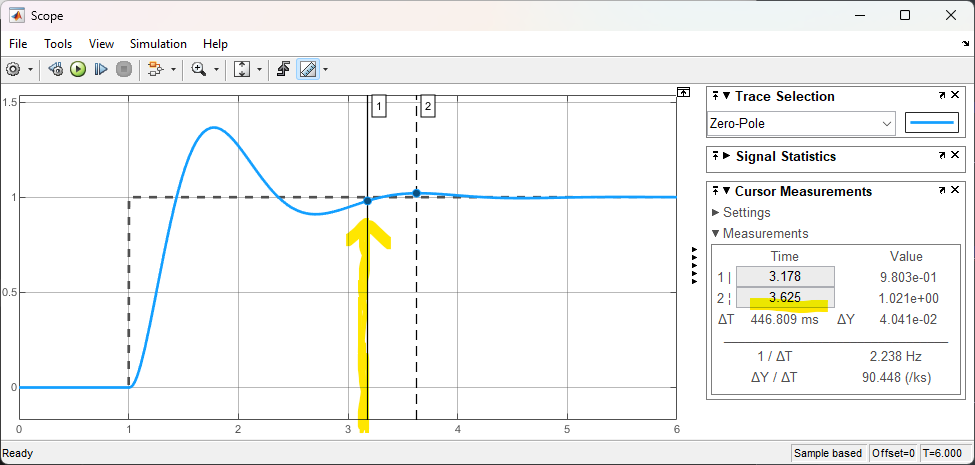
e um tempo de assentamento,
Este PID pode ser melhorando re-ajustando valores de
Aplicar o método 1 para sintonia de um PID para a seguinte planta:
Suponha que o sistema sintonizado com PID deva tentar respeitar:
Aplicar os últimos 2 métodos de sintonia de um PID à seguinte planta:
Suponha que se deseja um
Prazo de entrega: até 10/11/2022.
Observações finais sobre o documento à ser gerado:
Apresentar um documento (pode ser originalmente um arquivo Markdown exportado para PDF) descrevendo a aplicação de cada método. Este documento deve contemplar para cada método, os cálculos realizados (incluir código Matlab ressaltando resultados; mas incluir apenas os cálculos efetivamente usados, não se espera um “copy-&-paste” de todos os comandos usados!) e mostrar os gráficos obtidos (atentar para gerar gráficos com boa resolução (